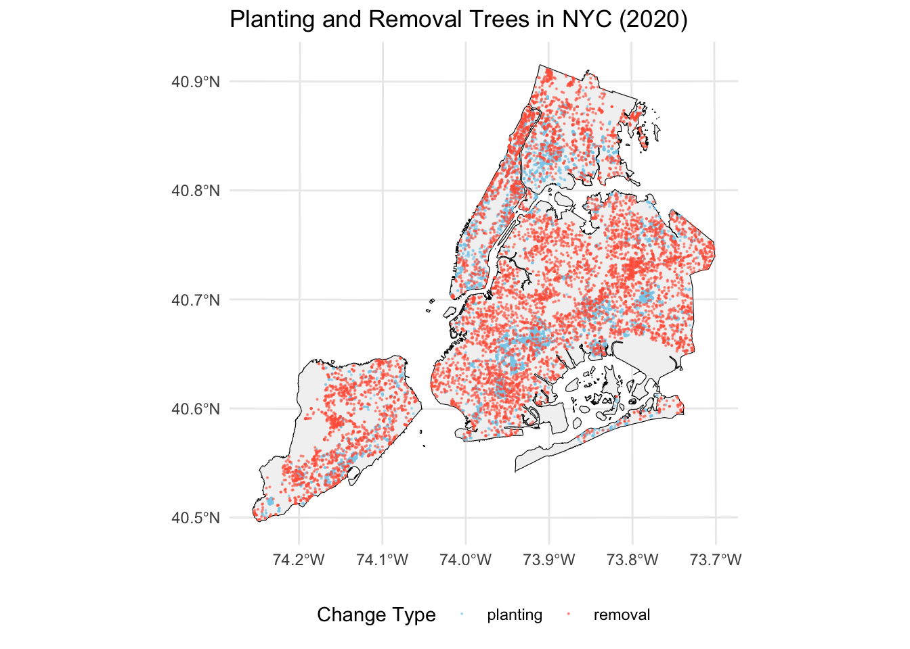

In this project, I will explore the cooling effect of urban trees on micro-climate in New York City (NYC). It is impractical to conduct controlled experiments at the city scale that isolate the impact of adding or removing trees on temperature, while controlling for other factors. However, the causal inference methods offer a promising alternative via identifying the valid controls and treatment groups from observational data.
The original data from working orders tracks NYC Parks work done on trees. Only the closed orders, without cancel date were selected. The orders were joined with planting space, to define the exact location. The plant/removal date is based on order ClosedDate, which ranged from 3/3/2015 to 11/7/2024.
The planting data is filtered to include only work types of “Tree Plant-Park Tree”, “Tree Plant-Street Tree”, “Tree Plant-Street Tree Block”. And the planting should be the only action applied to this location during the study period.
Similarly, the removal data is filtered to include only work types of “Tree Removal”, “Tree Removal for Tree Planting”, “Tree Down”. And the removal should be the only action applied to this location.
Code
exp_all <-readRDS("~/urban-cooling/data/proc/nyc/ForMS/exp_all.rds") %>%mutate(change =factor(change, levels =c(1, -1), labels =c("planting", "removal"))) ggplot(exp_all, aes(x = Year, fill = change)) +geom_histogram(binwidth =0.5, position ="dodge", color ="black") +labs(title ="Trees planted and removed every year",x ="Year",y ="Number of trees",fill ="Type" ) +scale_fill_manual(values =c("planting"="skyblue", "removal"="tomato")) +scale_x_continuous(breaks =seq(2014, 2025, by =1), limits =c(2014, 2025) ) +theme_classic()nycboundary <-st_read("~/urban-cooling/data/raw/NYC/boundary/nybb_dissolved.shp", quiet = T)ggplot() +geom_sf(data = nycboundary, fill ="grey95", color ="black") +geom_sf(data = exp_all %>%filter(Year ==2020), aes(color = change), size =0.1, alpha =0.5) +scale_color_manual(values =c("planting"="skyblue", "removal"="tomato")) +labs(title ="Planting and Removal Trees in NYC (2020)",color ="Change Type" ) +theme_minimal() +theme(legend.position ="bottom")
(a) Histogram of tree planting and removal in NYC (2015-2025)

(b) Fall phenology
Figure 1: Distribution of tree planting and removal orders from 2015 to 2024
2.2 Read and clean the WU data (based on GHCNd)
There are 9 raw daily variables selected, i.e. AvgTemp, HighTemp, LowTemp, Prcp, AvgDew, Humidity, WindSpeed, HighPressure, LowPressure. I flagged the records which are unknown or questionable according to the methods applied by Global Historical Climatology Network daily GHCNd.
Figure 2: Distribution of tree canopy coverage in 2020 for weather stations
3 Method and results
In order to address the confounding factors (e.g. from land use and climatic background) and the spillover effect, I plan to employ causal inference techniques, DiD explored here, to simulate experimental conditions and ensure robust and accurate attribution of the cooling effect.
3.1 Short-window cooling
Model
I aim to investigate the impact of urban tree planting on temperature, specifically analyzing temperature variations within 14 days before and after tree planting events. To identify the causal effect of tree planting, I employ a multi-period Difference-in-Differences (DiD) approach.
After conducting a preliminary DID (Difference-in-Differences) analysis, I found that the parallel trend assumption is not satisfied (Figure 3). I speculate there are several reasons for this:
Theoretical Considerations: Tree planting may not induce short-term temperature changes. In reality, planting starts with saplings that are not yet capable of providing cooling effects.
Data Issues:
Spatial Dispersion: Out of more than 80,000 trees, only 702 are located around 112 stations.
This also leads to a dispersion in planting times: when a planting event occurs, many stations do not experience any changes in tree planting.
Consequently, in the DID calculation, the number of control and treatment groups is highly imbalanced.
Source Code
---title: "workflow_cooling_DiD"author: "Jiali Zhu"date: "today"format: html: code-overflow: wrap code-fold: true code-tools: true code-summary: "Code"editor: visual---```{r}#| label: load-packages#| include: false#| warning: falselibrary(zhulabtools)load_packages(c("dplyr","lubridate", "ggplot2", "sf","sp", "readr", "purrr", "stringr","glue", "tidyr", "broom","lme4", "knitr", "broom.mixed", "ppcor", "lmtest","car", "patchwork", "terra", "ggpmisc", "did"))select <- dplyr::select```# 1 IntroductionIn this project, I will explore the cooling effect of urban trees on micro-climate in New York City (NYC). It is impractical to conduct controlled experiments at the city scale that isolate the impact of adding or removing trees on temperature, while controlling for other factors. However, the causal inference methods offer a promising alternative via identifying the valid controls and treatment groups from observational data.# 2 Data preparationI want to quantify the cooling effect provided by trees at urban scale based on volunteer-measured air temperature [Weather Underground program]() and tree working orders in [NYC Forestry Management System (ForMS)](https://data.cityofnewyork.us/Environment/Forestry-Work-Orders/bdjm-n7q4/about_data).## 2.1 Read in the tree planting and removal dataThe original data from working orders tracks NYC Parks work done on trees. Only the closed orders, without cancel date were selected. The orders were joined with planting space, to define the exact location. The plant/removal date is based on order `ClosedDate`, which ranged from 3/3/2015 to 11/7/2024.- The **planting** data is filtered to include only work types of "Tree Plant-Park Tree", "Tree Plant-Street Tree", "Tree Plant-Street Tree Block". And the planting should be the only action applied to this location during the study period.- Similarly, the **removal** data is filtered to include only work types of "Tree Removal", "Tree Removal for Tree Planting", "Tree Down". And the removal should be the only action applied to this location.```{r}#| label: fig-tree_work#| include: true#| layout-ncol: 1#| fig-cap: "Distribution of tree planting and removal orders from 2015 to 2024"#| fig-subcap: #| - "Histogram of tree planting and removal in NYC (2015-2025)"#| - "Fall phenology"#| warning: falseexp_all <-readRDS("~/urban-cooling/data/proc/nyc/ForMS/exp_all.rds") %>%mutate(change =factor(change, levels =c(1, -1), labels =c("planting", "removal"))) ggplot(exp_all, aes(x = Year, fill = change)) +geom_histogram(binwidth =0.5, position ="dodge", color ="black") +labs(title ="Trees planted and removed every year",x ="Year",y ="Number of trees",fill ="Type" ) +scale_fill_manual(values =c("planting"="skyblue", "removal"="tomato")) +scale_x_continuous(breaks =seq(2014, 2025, by =1), limits =c(2014, 2025) ) +theme_classic()nycboundary <-st_read("~/urban-cooling/data/raw/NYC/boundary/nybb_dissolved.shp", quiet = T)ggplot() +geom_sf(data = nycboundary, fill ="grey95", color ="black") +geom_sf(data = exp_all %>%filter(Year ==2020), aes(color = change), size =0.1, alpha =0.5) +scale_color_manual(values =c("planting"="skyblue", "removal"="tomato")) +labs(title ="Planting and Removal Trees in NYC (2020)",color ="Change Type" ) +theme_minimal() +theme(legend.position ="bottom")```## 2.2 Read and clean the WU data (based on GHCNd)There are 9 raw daily variables selected, i.e. AvgTemp, HighTemp, LowTemp, Prcp, AvgDew, Humidity, WindSpeed, HighPressure, LowPressure. I flagged the records which are unknown or questionable according to the methods applied by Global Historical Climatology Network daily [GHCNd](https://www.ncei.noaa.gov/products/land-based-station/global-historical-climatology-network-daily).```{r}#| label: read_wu_data#| include: true#| layout-ncol: 1#| fig-cap: "Distribution of WU stations in NYC"#| warning: falsecity ="NY"# all_sites_temp <- read_clean_WU(city = city, run_checks = TRUE)all_sites_temp <-readRDS(paste0("~/urban-cooling/data/raw/WU/",city,"/",city,"_wu_9var.rds")) %>%mutate(LowTemp =case_when(LowTemp_Flag ~NA_real_, TRUE~ LowTemp),AvgTemp =case_when(AvgTemp_Flag ~NA_real_, TRUE~ AvgTemp),HighTemp =case_when(HighTemp_Flag ~NA_real_, TRUE~ HighTemp),AvgDew =case_when(AvgDew_Flag ~NA_real_, TRUE~ AvgDew),Humidity =case_when(Humidity_Flag ~NA_real_, TRUE~ Humidity),HighPressure =case_when(HighPressure_Flag ~NA_real_, TRUE~ HighPressure),LowPressure =case_when(LowPressure_Flag ~NA_real_, TRUE~ LowPressure),WindSpeed =case_when(WindSpeed_Flag ~NA_real_, TRUE~ WindSpeed),Prcp =case_when(Prcp_Flag ~NA_real_, TRUE~ Prcp) ) %>% dplyr::select(c(Date,name, HighTemp, AvgTemp, LowTemp, AvgDew,Humidity,HighPressure,LowPressure,WindSpeed,Prcp ))wu_location <-read_csv(paste0("~/urban-cooling/data/raw/WU/", city, "/location.csv"), show_col_types =FALSE) %>%st_as_sf(coords =c("Lon", "Lat"), crs =4326)ggplot() +geom_sf(data = nycboundary, fill ="grey") +geom_sf(data = wu_location, color ="blue", size =1) +theme_minimal()```## 2.3 Join the planting with climate informationThe treated weather stations are those that have trees within a **100 m** buffer.```{r}buffer_size =100planting <- exp_all %>%filter(change =="planting") %>%select("ClosedDate", "Year", "Month", "Day", "WorkOrderGlobalID")wu_buffer <-st_buffer(wu_location, dist = buffer_size)intersects <-st_intersects(planting, wu_buffer)planting_in_buffer <- planting %>%mutate(buffer_id =sapply(intersects, function(x) if (length(x) ==1) x[1] elseNA)) %>%left_join(wu_buffer %>%st_drop_geometry() %>%mutate(buffer_id =row_number()), by ="buffer_id") %>%filter(!is.na(buffer_id)) if (nrow(planting %>%filter(lengths(intersects) >1)) >0) { planting_in_buffer <- planting_in_buffer %>%select(WorkOrderGlobalID, Site) %>%rbind( multiple_intersections %>%rowwise() %>%mutate(Site = { current_row_index <-which(planting$WorkOrderGlobalID == WorkOrderGlobalID)if (length(current_row_index) ==0||is.na(current_row_index) || current_row_index >length(intersects)) {NA_character_ } else { intersected_buffers <- intersects[[current_row_index]]if (length(intersected_buffers) ==0) {NA_character_ } else { point_geom <-st_geometry(planting)[current_row_index] buffer_geoms <-st_geometry(wu_location)[intersected_buffers] distances <-st_distance(point_geom, buffer_geoms) nearest_index <-which.min(distances) wu_buffer$Site[intersected_buffers[nearest_index]] } } } ) %>%ungroup() )}```## 2.4 Join canopy coverage valueI introduced the tree canopy coverage in 2020 as a control variable, as it serves as a background context that influences temperature.```{r}#| label: fig-canopy#| include: true#| layout-ncol: 1#| fig-cap: "Distribution of tree canopy coverage in 2020 for weather stations"#| warning: false#| canopy2020 <-rast("~/urban-cooling/data/raw/NYC/nlcd_tcc/clipped/nlcd_tcc_NY_2020.tif")wu_buffer_canopy <-st_transform(wu_buffer, crs(canopy2020)) %>%vect() %>%extract(canopy2020, ., fun = mean, na.rm =TRUE)wu_buffer$avg_canopy <- wu_buffer_canopy[, 2]wu_buffer <- wu_buffer %>%st_drop_geometry() %>%mutate(avg_canopy =ifelse(is.nan(avg_canopy), NA, avg_canopy))ggplot(wu_buffer, aes(x = avg_canopy)) +geom_histogram() +labs(x ="Canopy coverage (%)",y ="Frequancy" ) +theme_classic()```# 3 Method and resultsIn order to address the confounding factors (e.g. from land use and climatic background) and the spillover effect, I plan to employ causal inference techniques, DiD explored here, to simulate experimental conditions and ensure robust and accurate attribution of the cooling effect.## 3.1 Short-window cooling### ModelI aim to investigate the impact of urban tree planting on temperature, specifically analyzing temperature variations within *14* days before and after tree planting events. To identify the causal effect of tree planting, I employ a multi-period Difference-in-Differences (DiD) approach.$$\text{HighTemp}_{ym} = \alpha + \beta \cdot \text{Treat}_{ym} + \mathbf{X}_{ym} \cdot \gamma + \lambda_y +\lambda_m+ \varepsilon_{ym}$$Where:- $\text{HighTemp}_{ym}$ represents the high temperature in year $y$, month $m$.- $\text{Treat}_{ym}$ is the treatment indicator, taking a value of 1 if the site have planted tree, and 0 otherwise.- $\mathbf{X}_{ym}$ includes a set of control variables, including precipitation, dew point, wind speed, pressure, and tree canopy coverage.- $\lambda_y$ represents year fixed effects.- $\lambda_m$ represents month fixed effects.- $\varepsilon_{ym}$ is the error term.- $\beta$ is the key coefficient, measuring the **average treatment effect on temperature** due to tree planting.And the dataset looks like:```{r}#| label: short-data#| include: true#| warning: falsematched_data <- planting_in_buffer %>%mutate(ClosedDate =as.Date(ClosedDate)) %>%inner_join(all_sites_temp, by =c("Site"="name")) %>%filter(Date >= (ClosedDate -14) & Date <= (ClosedDate +14)) %>%mutate(treat =15)excluded_sites_dates <- matched_data %>%st_drop_geometry() %>%select(Site, Date, ClosedDate) %>%distinct()other_sites_data <- all_sites_temp %>%filter(Date %in% matched_data$Date) %>%anti_join(excluded_sites_dates, by =c("name"="Site", "Date"="Date")) %>%mutate(treat =0) %>%rename(Site = name) %>%left_join(excluded_sites_dates %>%select(Date, ClosedDate) %>%st_drop_geometry() %>%distinct(), by ="Date")matched_data <- matched_data %>%st_drop_geometry() %>%bind_rows(other_sites_data)did_input <- matched_data %>%left_join(wu_buffer, by ="Site") %>%mutate(time =as.integer(Date - ClosedDate +15),ClosedDate_id =as.integer(factor(ClosedDate)),AvgPress = (HighPressure + LowPressure)/2) %>%filter(!is.na(AvgTemp) &!is.na(AvgDew) &!is.na(WindSpeed) &!is.na(Prcp) &!is.na(AvgPress) &!is.na(avg_canopy)) %>%mutate(Year =as.factor(year(ClosedDate)), Month =as.factor(month(ClosedDate)), Day =as.factor(day(ClosedDate))) %>%select(ClosedDate_id,ClosedDate, Year, Month,treat, time, AvgTemp, Prcp,AvgDew, WindSpeed , AvgPress, avg_canopy)head(did_input)```- `ClosedDate`: This is the time when tree is planted.- `treat`: This is the time when a site becomes treated (tree planted in its buffer). For site that are never treated, this variable is set equal to 0.- `time`: record the time step in days (1-14 : pre-period for tree planting, 16-29: post-period).```{r}#| label: fig-short-data#| fig-cap: "Parallel trend test"#| include: true#| warning: false#| code-fold: falseshort_did <-att_gt(yname ="AvgTemp",gname ="treat",idname ="ClosedDate_id",tname ="time",xformla =~ Year + Month + Prcp + AvgDew + WindSpeed + AvgPress + avg_canopy,data = did_input,panel =FALSE )agg.es <-aggte(short_did, type ="dynamic")# summary(agg.es)ggdid(agg.es, ylim =c(-.3, .3))```### Discussion and next stepAfter conducting a preliminary DID (Difference-in-Differences) analysis, I found that the parallel trend assumption is not satisfied (@fig-short-data). I speculate there are several reasons for this:- **Theoretical Considerations**: Tree planting may not induce short-term temperature changes. In reality, planting starts with saplings that are not yet capable of providing cooling effects. - [ ] Would a long-term comparison be more effective, such as comparing the highest summer temperatures before planting with those in the years following planting?- **Data Issues**: - Spatial Dispersion: Out of more than 80,000 trees, only 702 are located around 112 stations. - This also leads to a dispersion in planting times: when a planting event occurs, many stations do not experience any changes in tree planting. - Consequently, in the DID calculation, the number of control and treatment groups is highly imbalanced. - [ ] Should other meteorological data be used? Perhaps grid data with broader coverage?<!-- #### Long-window cooling --><!-- Average temperature in July --><!-- ```{r} --><!-- stats_temp <- all_sites_temp %>% --><!-- mutate(Year = year(Date), Month = month(Date)) %>% --><!-- filter(Month == 7) %>% --><!-- group_by(name, Year) %>% --><!-- summarise( --><!-- avg_AvgTemp = mean(AvgTemp, na.rm = TRUE), --><!-- avg_AvgDew = mean(AvgDew, na.rm = TRUE), --><!-- avg_HighPressure = mean(HighPressure, na.rm = TRUE), --><!-- avg_LowPressure = mean(LowPressure, na.rm = TRUE), --><!-- avg_WindSpeed = mean(WindSpeed, na.rm = TRUE), --><!-- total_Prcp = sum(Prcp, na.rm = TRUE) --><!-- ) --><!-- matched_data <- planting_in_buffer %>% --><!-- mutate(ClosedDate = as.Date(ClosedDate)) %>% --><!-- inner_join(stats_temp, by = c("Site" = "name")) --><!-- excluded_sites_dates <- matched_data %>% --><!-- st_drop_geometry() %>% --><!-- group_by(Site, Year.x, Year.y) %>% --><!-- summarise(across(everything(), first), .groups = "drop") --><!-- other_sites_data <- stats_temp %>% --><!-- anti_join(excluded_sites_dates, by = c("name" = "Site")) %>% --><!-- mutate(Year.x = 0) %>% --><!-- rename(Year.y = Year, Site = name) --><!-- matched_data <- excluded_sites_dates %>% --><!-- bind_rows(other_sites_data) --><!-- did_input <- matched_data %>% --><!-- left_join(wu_buffer, by = "Site") %>% --><!-- mutate(ClosedDate_id = as.integer(factor(ClosedDate)), --><!-- AvgPress = (avg_HighPressure + avg_LowPressure)/2) %>% --><!-- filter(!is.na(avg_AvgTemp) & !is.na(avg_AvgDew) & !is.na(avg_WindSpeed) & !is.na(total_Prcp) & !is.na(AvgPress) & !is.na(avg_canopy)) %>% --><!-- mutate(Year = as.factor(Year.y)) --><!-- sites_with_multiple_years <- did_input %>% --><!-- group_by(Site) %>% --><!-- summarise(n_years = n_distinct(Year.x), .groups = "drop") %>% --><!-- filter(n_years >= 2) %>% --><!-- pull(Site) --><!-- did_input <- did_input %>% --><!-- filter(!Site %in% sites_with_multiple_years) --><!-- ``` --><!-- ```{r} --><!-- short_did <- att_gt(yname = "avg_AvgTemp", --><!-- gname = "Year.x", --><!-- # idname = "ClosedDate_id", --><!-- tname = "Year.y", --><!-- xformla = ~ 1, --><!-- data = did_input, --><!-- panel = FALSE --><!-- ) --><!-- # dew point, wind speed, and rainfall indicators. --><!-- agg.es <- aggte(short_did, type = "dynamic") --><!-- # summary(agg.es) --><!-- ggdid(agg.es, ylim = c(-.3, .3)) --><!-- ``` --><!-- ### --><!-- About Land surface temperature / Daymet -->